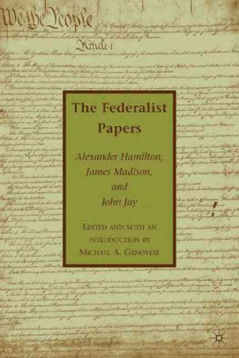
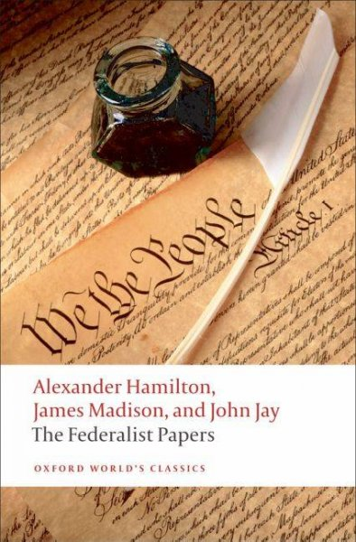
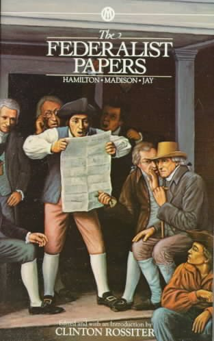

The Federalist papers
Edited and with an introduction by Ian Shapiro. Essays by John Dunn, Donald L. Horowitz, Eileen Hunt Botting
This is a book written in English published by New Haven : Yale University Press in 2009. The library has 23 more editions of this book.
2 physical copies and 1 digital version of this item is available at the following locations:
| Status | Location | Call number | |
|---|---|---|---|
| Available to use at the library | Stephen A. Schwarzman Building, Milstein Division Rm 121 | IB 09-5067 | Place a hold |
| Available online | Hathi Trust | View online | |
| Available to borrow | 58th Street Non-Fiction | 342.73 F | Place a request in our circulating catalog |
| Hold placed, in transit | 125th Street Non-Fiction | 342.7302 F | |
| Due 10/14/2016 | 58th Street Non-Fiction | 342.73 F | |
| See 2 more copies | |||
Item details
- Title
- The Federalist papers : Alexander Hamilton, James Madison, John Jay / edited and with an introduction by Ian Shapiro ; with essays by John Dunn, Donald L. Horowitz, Eileen Hunt Botting.
- Uniform title
- Federalist.
- Format
- Book
- Language
- English
- Published
- New Haven: Yale University Press, 2009.
- Description
- xxii, 579 p. ; 21 cm.
- Series
- Rethinking the Western tradition.
- Subjects
- Contributors
- Bibliography
- Includes bibliographical references and index.
- Contents
-
- Introduction: The Federalist then and now / Ian Shapiro
- The Federalist papers
- The Articles of Confederation
- The Constitution of the United States of America
- Amendments to the Constitution of the United States
- Unmanifest destiny / John Dunn
- The Federalist abroad in the world / Donal L. Horowitz
- Protofeminist responses to the Federalist-Antifederalist debate / Eileen Hunt Botting.
- ISBN
-
- 9780300118902 (pbk.)
- 0300118902 (pbk.)
- Research call number
- IB 09-5067
Other editions of "The Federalist papers"

The Federalist papers: edited by and with an introduction by Michael A. Genovese
Palgrave Macmillan 2009 1st ed.

The Federalist papers: edited with an introduction and notes by Lawrance Goldman
Oxford University Press 2008

External data
- Publisher's summary
-
- This authoritative edition of the complete texts of the "Federalist Papers", the Articles of Confederation, the U.S. Constitution, and the Amendments to the U.S. Constitution features supporting essays in which leading scholars provide historical context and analysis. An introduction by Ian Shapiro offers an overview of the publication of the "Federalist Papers" and their importance. In three additional essays, John Dunn explores the composition of the "Federalist Papers" and the conflicting agendas of its authors; Eileen Hunt Botting explains how early advocates of women's rights, most prominently Mercy Otis Warren, Judith Sargent Murray, and Charles Brockden Brown, responded to the Federalist-Antifederalist debates; and Donald Horowitz discusses the "Federalist Papers" from the perspective of recent experiments with democracy and constitution-making around the world. These essays both illuminate the original texts and encourage active engagement with them.
- Source: Nielsen Book Data
- Wikipedia summary
-
- The Federalist is a collection of 85 articles and essays written by Alexander Hamilton, James Madison, and John Jay promoting the ratification of the United States Constitution.
- Source: Wikipedia
External links
Cite this book
- APA
- Hamilton, A., Madison, J., Jay, J., & Shapiro, I. (2009). The Federalist papers: Alexander Hamilton, James Madison, John Jay. New Haven: Yale University Press.
- MLA
- Hamilton, Alexander, James Madison, John Jay, and Ian Shapiro. The Federalist Papers: Alexander Hamilton, James Madison, John Jay. New Haven: Yale University Press, 2009. Print.
- CHICAGO
- Hamilton, Alexander, James Madison, John Jay, and Ian Shapiro. 2009. The Federalist papers: Alexander Hamilton, James Madison, John Jay. New Haven: Yale University Press.
- HARVARD
- HAMILTON, A., MADISON, J., JAY, J., & SHAPIRO, I. (2009). The Federalist papers: Alexander Hamilton, James Madison, John Jay. New Haven, Yale University Press.
- TURABIAN
- Hamilton, Alexander, James Madison, John Jay, and Ian Shapiro. The Federalist Papers: Alexander Hamilton, James Madison, John Jay. New Haven: Yale University Press, 2009.